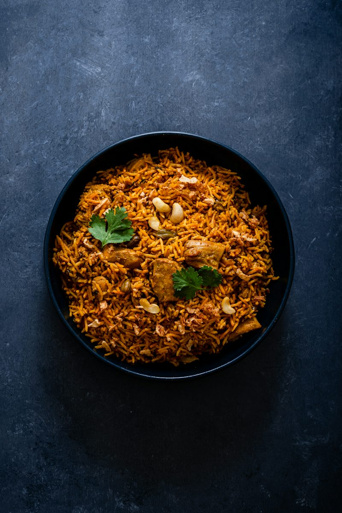

Recipe 1: Jollof Rice
Prep:15 min |Cook:45 min | Serves: 4

Ingredients
- 3 cups parboiled rice
- 4 Large tomatoes
- 2 red bell peppers(tatashe)
- 2 scotch bonnet peppers(ata rodo)
- 1 large onion
- 1/2 cup vegetable oil
- 2 tbsp tomato paste
- 2 cups chicken or vegetable stock
- 1 tbsp thyme
- 1 tbsp curry powder
- 2 bay leaves
- Salt and seasoning cubes to taste
Steps
-
Blend the tomatoes,bell peppers,scotch bonnet, and half the onion until
smooth
- Boil the blended mix until the water reduces by half
-
Heat the oil, fre the remaining sliced onion,then add the tomato paste
and fry for 5 minutes
-
Pour in the boiled pepper mix and fry until the oil rises to the top
- Add thyme,curry,bay leaves,salt and seasoning cubes.
-
Add the washed rice and stock.The liquid should just cover the rice
-
Cover tightly and cook on low heat for 30 to 35 minutes,stirring only
once or twice
- Rest for 5 minutes,then Serve
Tip:Cover the pot with foil before the lid to trap steam and get that
smoky taste